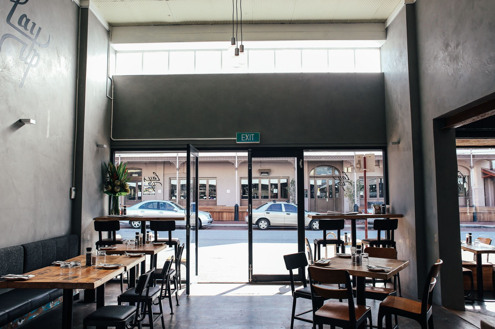

Open your café with clear numbers and zero guesswork.
Opening a coffee shop in Cape Town is about far more than pulling great espresso. It demands realistic startup capital, City compliance, seamless workflow design, and resilient equipment.
World of Speciality Coffee provides transparent education first—guiding you from concept and lease negotiation through City of Cape Town Certificates of Acceptability (CoA), commercial equipment selection, and Odoo POS implementation.

Cape Town Café Startup Cost Breakdown
The industry failure rate is largely driven by undercapitalization and ignoring 3 to 6 months of operating cash reserve. Here is a transparent look at startup costs for an 80–120 m² sit-down café with a commercial espresso bar in Cape Town.
| Startup Budget Item | Description & Key Requirements | Low Estimate (ZAR) | High Estimate (ZAR) |
|---|---|---|---|
| Rent Deposit & Advance | Commercial landlord security deposit (often 2-3 months) plus first month advance. | R60,000 | R200,000 |
| Commercial Espresso & Brewing Machinery | 2-group commercial espresso machine (e.g. Wega Rover), on-demand grinders, water filtration & Flojet system. | R120,000 | R350,000 |
| Shopfitting, Furniture, Décor & Signage | Counter construction, electrical & plumbing drops, guest seating, lighting, branding and menu boards. | R150,000 | R500,000 |
| Point of Sale (POS), IT & Audio | Odoo POS touchscreen terminals, barcode scanner, receipt printer, guest Wi-Fi and sound setup. | R25,000 | R60,000 |
| Permits, Licences, Legal & CIPC | City of Cape Town Business Licence (~R25), CoA, fire safety, lease review and legal registrations. | R15,000 | R40,000 |
| Opening Stock & Consumables | Speciality green/roasted beans, alternative milks, syrups, takeaway cups, lids, filters, packaging. | R40,000 | R80,000 |
| Backup Power (Load-Shedding Resilience) | Pure sine-wave inverter + lithium battery system to power espresso pumps, grinders, refrigeration and POS. | R60,000 | R150,000 |
| Working Capital Reserve (3–6 Months) | Essential operational runway to cover salaries, rent, and overheads while building a loyal regular base. | R150,000 | R400,000 |
| Total Estimated Startup Capital | R620,000 | R1,780,000+ | |
Staff Costs: 25% – 35%
Staffing typically accounts for 25% to 35% of monthly revenue. Efficient barista and kitchen workflows keep service fast without over-scheduling.
Occupancy: 6% – 10%
Keep your total monthly rent and utilities under 10% of projected turnover. Over-committing to exorbitant lease rates is the #1 pitfall in Cape Town.
Target Net Margin: ~10%
Well-managed morning and day-trade cafés target ~10% net profit. Coffee carries exceptional gross margins; breakfast and bakery items boost average spend.
Navigating Cape Town Health & Trading Compliance
Operating legally protects your investment. We guide you step-by-step through the municipal processes, preparing your documents and layout plans before health and fire inspectors visit.
Certificate of Acceptability (CoA)
Required for all premises handling food or beverages under national Regulation R638. The application is completely free in the City of Cape Town via the City’s e-Services portal.
- 1:50 Scale Layout Plan: Detailed drawing showing food prep, scullery, refrigeration, waste storage, and hand-wash basins.
- Person in Charge: Certified training records in food hygiene and food safety.
- Pest & Waste Control: Formal contracts and scheduled preventative maintenance records.
- Inspection: Environmental Health Practitioner (EHP) visits premises within ~10 working days of document sign-off.
Category 1 Business Licence
Required by the City of Cape Town for any establishment preparing and serving meals, snacks, or beverages for on-site consumption.
- Low Application Fee: Category 1 licence application is nominally ~R25 via City e-Services.
- Cross-Departmental Clearance: Triggered once your CoA, zoning clearance, and fire population approvals are linked.
- Mandatory Display: Must be visibly mounted on the premises alongside your CoA prior to trading.
Zoning & Land Use Clearance
Ensures the property's zoning rights permit commercial café operation (e.g. Local Business 1/2 or General Business).
- Verification of title deed restrictions and municipal spatial planning.
- Approved architectural building plans & Certificate of Occupancy.
- Consent use or rezoning submission assistance if current zoning is non-conforming.
Fire Population & Clearance Certificate
Ensures the safety of your customers and baristas in full compliance with municipal fire and evacuation bylaws.
- Seating capacity calculation and designated emergency egress routes.
- Serviced fire extinguishers (CO2 and Foam) and fire blanket in kitchen/prep areas.
- Illuminated emergency exit signs and panic hardware if occupancy exceeds thresholds.
The 11-Module Launch Curriculum
From initial reality check to opening day and daily POS reconciliation. Every module is available in our online eLearning curriculum.
Is a Café Right for You?
Unpack the reality of 50–60 hour weeks, early morning trade advantages, lifestyle fit, and operational stamina.
Business Planning & Financials
Cape Town startup ranges, rent-to-turnover ratios, break-even models, and building a 3-6 month cash runway.
Location, Zoning & Premises
Foot-traffic validation, lease negotiations, commercial lease clauses, and City zoning clearance verification.
Legal Compliance & Permits
The free Cape Town CoA, Regulation R638 standards, 1:50 scale drawings, Fire Clearance, and Business Licences.
Equipment & Machinery
Espresso machines (Wega Rover), on-demand grinders, water filtration chemistry, refrigeration, and backup power.
Interior Design & Shop Fitting
Barista ergonomic triangle, customer ordering flow, cost-effective counter finishes, and ambient lighting.
Menu Development & Costing
Coffee recipes, milk attach rates, breakfast/pastry food margins, and building reliable supplier relationships.
Staffing, Training & Culture
Barista hiring protocols, sensory dial-in, latte art standards, hygiene routines, and labor cost control.
Operations & Odoo POS Setup
Integrated POS, table layouts, modifier keys, kitchen displays, automated stock counts, and daily cashing up.
Marketing & Local Regulars
Cape Town neighbourhood activation, soft-launch invitations, digital loyalty, and social storytelling.
Turnkey Support & Next Steps
Bringing all pieces together with WOSC: turnkey package delivery, installation, opening day support, and membership savings.
Take Course A for Free
Enroll in our 45-minute "Café Reality Check" intro course on our Odoo eLearning platform.
Start Free Intro Course ↗How WOSC Delivers Your Café Turnkey
You don’t have to piece together five different contractors, machine importers, and software consultants. We manage the setup together under one roof.
1. Machinery & Water
Direct supply, installation, and bench calibration of commercial espresso machines (Wega Rover), grinders, and multi-stage water filtration.
2. Layout & Compliance
Bar workflow design, drafting your 1:50 scale CoA layout plan, and pre-inspection readiness audits for City Health.
3. Odoo POS Integration
End-to-end POS implementation: floor plans, modifier buttons, payment card integration, real-time recipe-based stock deductions.
4. Staff & Barista Academy
Hands-on barista training at our showroom and on-site: extraction theory, milk texturing speed, and food hygiene compliance.